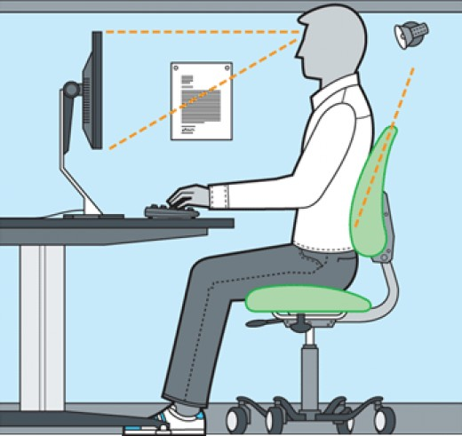
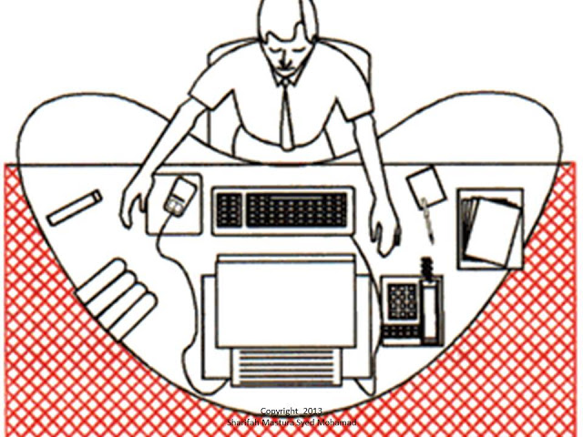

Improving user experience in HTML forms
joelpurra.comjoelpurra.com/r/html-forms/Insert pretty picture to make everyone super interested
Improve what?
Usability
- Reduce confusion
- Reduce complexity
- Reduce perceived length
- Reduce frustration
- Normalized browser behavior
- ↔ Logical input ordering
- ↔ Hide fields until needed
- ↔ Split up form to steps/parts
- ↔ Early feedback, error messages
- ↔ Override dependent behavior
Input speed
- Autocompletion
- Automatic formatting
- Skipping low-frequency fields
- Shortcut keys
- ↔ Based on already existing data
- ↔ Based on rules
- ↔ Based on user consent/usage
- ↔ Based on usage
h5Validate
An HTML5 form validation plugin for jQuery.
Usability (normalize browser behavior, early feedback, error messages)
<input type="text" required="required"
placeholder="A#A #A#"
pattern="^([a-zA-Z]\d[a-zA-Z])\s*(\d[a-zA-Z]\d)$"
title="Required: Canadian H0H 0H0 format."
data-h5-errorid="invalid-zip" />
<span id="invalid-zip">*</span>
$("form").h5Validate();Not super active, but my fork is one year old, and only partially/badly re-integrated upstream.
EmulateTab
A jQuery plugin to emulate tabbing between elements on a page.
Usability (normalize browser behavior)
// From the currently focused element
$.emulateTab();
// Reverse tab from a specific element
$(selector).emulateTab(-1);
For example, go to the next field after selecting a value in a dropdown.
This is a developer library/tool.
SkipOnTab
A jQuery plugin to exempt selected form fields from the forward tab order.
Speed (reduce field tabbing)
<input type="text" data-skip-on-tab="true" />
<ol data-skip-on-tab="true">
<li><input type="checkbox" /> Checkbox</li>
<li><input type="checkbox" /> Another checkbox</li>
...
Not the same as tabindex="-1", see SkipOnTab versus tabindex.
PlusAsTab

PlusAsTab

PlusAsTab
PlusAsTab
A jQuery plugin to use the numpad plus key (configurable) as a tab key equivalent.
Speed (physical keyboard distance)
JoelPurra.PlusAsTab.setOptions({
// Enter, arrow down, numpad plus
key: [13, 40, 107]
});
$(selector).plusAsTab();<input type="number" data-plus-as-tab="true" />
Followup
A jQuery plugin to show and hide follow up questions in a form.
Usability (reduce complexity/fewer visible fields), speed (reduce field tabbing)
<p data-has-follow-ups="">
Ever had a close encounter with a UFO?
<div>
<input type="radio" data-has-follow-up="sibling" /> Yes
<div data-is-follow-up="">
Please explain the encounter, especially what kind it was
<textarea data-is-follow-up-required="required"></textarea>
</div>
</div>
<input type="radio" /> No
</p>
AutoCleanCallback
Automatic HTML input field cleaning onkeyup/onchange using jQuery.
Usability (takes care of formatting), speed (reduced efforts)
var $telephoneInputs = $("[type=tel]");
$telephoneInputs.each(function() {
// /^\(?([0-9]{3})\)?[\-. ]?([0-9]{3})[\-. ]?([0-9]{4})$/
// "($1) $2-$3"
JoelPurra.autoCleanNorthAmericanPhoneNumber($(this));
});Works well with copy-pastes, regexp beauty fixes.
Easily extensible. Comes with trim, lowercase, uppercase, normalize whitespace, numbers only. Extensions include AutoCleanCallback-Canada, as I was living and working in Canada while developing this.
PageHasFormChanges
A jQuery plugin to check if anything has changed in any form on a page, and warn the user before leaving the page.
Usability (reduces frustration)
// Just load the script!
Made for pages with only one form, where "any" change means the user should post ("save") the form.
EditDidWhat
Compare two strings to see what has changed, and perform some string manipulation.
Usability (reduced complexity, fewer fields/freetext), speed (autocompletion)
var change = EditDidWhat.detectChange(previous, current),
diffIndex = EditDidWhat.findDifferenceIndex(previous, current),
diffLastIndex = EditDidWhat.findLastDifferenceIndex(previous, current),
diffLineNumber = EditDidWhat.getLineNumberAt(current, diffIndex),
diffLinePrevious = EditDidWhat.getLine(previous, diffLineNumber),
diffLineCurrent = EditDidWhat.getLine(current, diffLineNumber),
diffLineReplaced = EditDidWhat.replaceLine(current, diffLineNumber, replaceWith);
Detects inserts, truncations, replacements, appends, splices.
Works best on small changes, for example per keystroke.
ChangePolling
A jQuery plugin to check if the value has changed in an input/select/textarea without relying on the jQuery .change() event.
$("#my-input-to-poll").changePolling({
interval: 1000,
autoStart: true
});Polling at a configurable interval, which will then trigger the jQuery .change() event. Useful when you've got third-party plugins that don't play well with others, when performing changes in forms.
This is a developer library/tool. See also jquery-mutation-summary.
FormFieldInfo
A javascript plugin used to collect information about forms in a page.
var fields = JoelPurra.FormFieldInfo.getFields(selector, $context);
var fieldGroups = JoelPurra.FormFieldInfo.getFields()
.removeEmptyNames().mergeArrays().groups().toArray();
This is a developer library/tool.
Useful when running automated tools to test or extract information - for example using phantomjs, favorably used with ObjectComparator.
The form field information is used to filter out potential form problems, like missing field names, values for radio buttons etcetera.
Unreleased projects
Some examples
AccessKeys: A tool that automatically displays all keyboard shortcuts available.
When holding down the Alt key, shortcuts and their descriptions are displayed - both as a summary and beside the button/link that it activates. Increases usage, user shortcut key suggestions and satisfaction.
Improving user experience in HTML forms
Questions?
Joel Purra
joelpurra.com
Swedish full stack, generalist, freelance, software engineer.
If your company needs reinforcements, let's talk!
You'll find the presentation at joelpurra.com/r/html-forms
Presented at the Berlin HTML5 Meetup Group in December 2013.
Code snippets/examples may be copied freely.
The rest of the presentation is licenced under CC BY-SA 3.0.